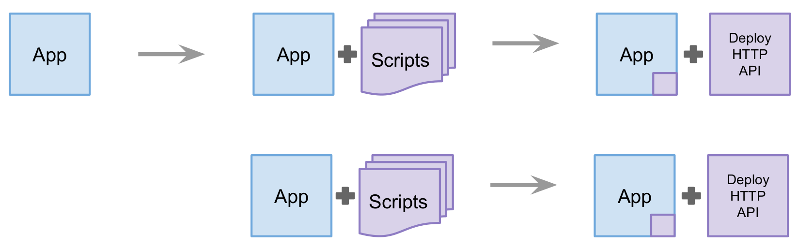
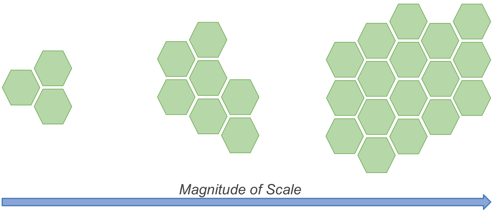
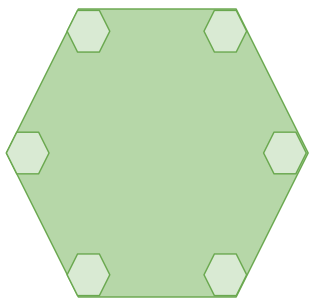
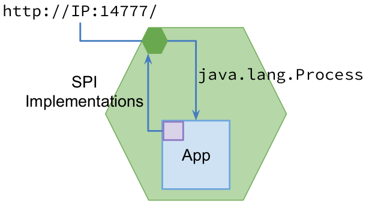
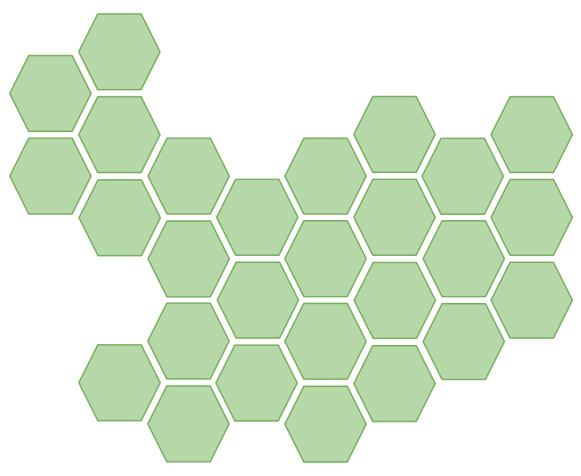

Massive Deployments on Amazon AWS with JVM
Massive Deployments on Amazon AWS with JVM
Behrooz Nobakht
@behruz
From On-Premise to Managed

What does massive mean?

What is a server?
Development
- Um, huh?!
- … pause …
- We shipt it to Ops.
- They deploy!
Operation
- What version to install?
- What process to start?
- Which data to use?
- How to access logs?
- How to monitor processes?
- How to sync our infra; e.g. LB servers?
Server abstraction
is too low-level
for our development and operation
Server as an HTTP API

/install/create/process/logs/monitor/resources
A JVM for a JVM
Service Provider Interfaces (SPI)

- A few “factory” patterns
- Generic RESTful operations: logs, monitors, resources
Deployment is a development responsibility
- Does it have
//:14777/?
- SPI implemented?
- Tested and Integrated?
- Locally Deployable?
- Deliver to Ops.
- They Deploy!
Does it really matter what’s beneath //:14777/ ?!
- Infrastructure provides servers
- Every server boots with one
//:14777/
- Auto-register server with Controller
- Controller synchronizes servers with load balancers
- Controller manages the state of servers
- Controller automates workflows
How we benefit?
- Orchestration becomes automatic
- Relieve from small operation details
- Disaster Recovery
- Failure Mitigation
- Monitoring
- Horizontal Scaling
Operating ≅ 2000 AWS servers with an awesome small DevOps team
